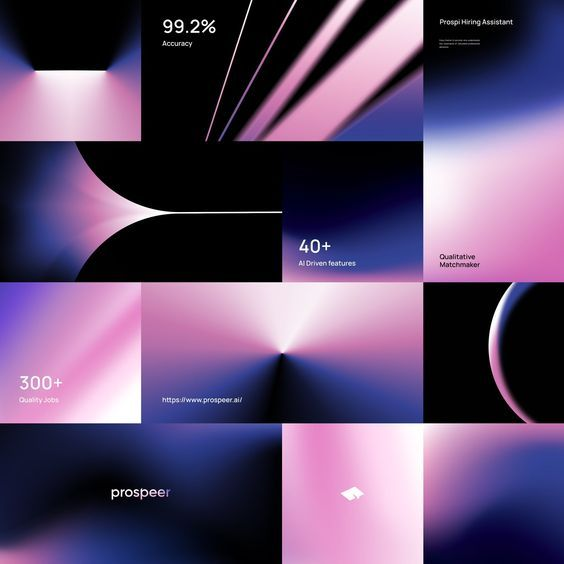

Typography
Future aesthetics embrace pastel contrasts and friendly typography to communicate warmth and modern optimism.

Color Palettes
Soft pastel colors combine with vibrant accents to create approachable yet dynamic visuals.
